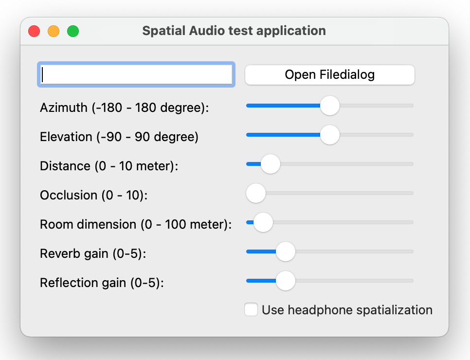

Spatial Audio Panning Example
Shows some of the capabilities of the spatial audio engine in Qt.
The Spatial Audio Example demonstrates how you can use Qt Spatial Audio to place sound sources in 3D space and how positioning of the sound source and room properties affect the listening experience.
The example lets you specify a sound file to be played back at a certain position in 3D space relative to the listener. Using sliders you can change the distance and the azimuth and elevation angles to the source. You can also change dimensions of a virtual room, the intensity of the room reflections and reverb.
Various other properties can also be modified such as the dimensions of a virtual room and the intensity of the room reflections and reverb.

Files: